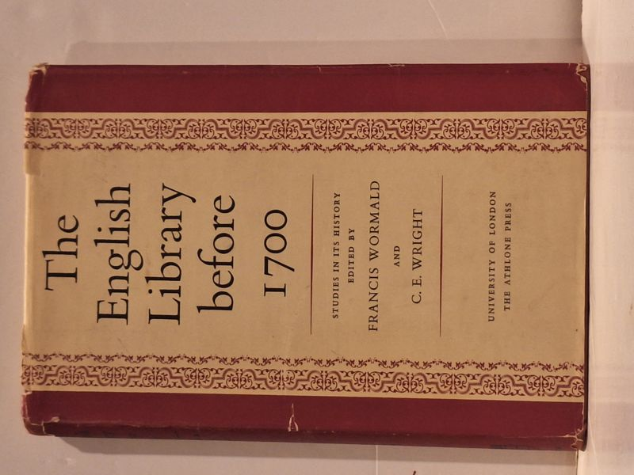

The English Library before 1700: Studies in its History
Francis Wormald and C. E. Wright (editors) · Athlone Press, London, 1958

C$38.0 · Good condition
University of London / The Athlone Press, London, 1958. First edition. Hardcover with patterned cream-and-burgundy dust jacket, decorative borders. Wormald (Professor of Palaeography, University of London) and Wright (Deputy Keeper of Manuscripts, British Museum) edit a collection of studies on the history of English libraries before 1700. Distributed by Constable & Co Ltd, with North American distribution by University of Toronto Press (Canada) and Oxford University Press / Essential Books Division (USA).
Details
- Publisher: Athlone Press, London, 1958
- Binding: Hardcover
- Edition: First edition
- Condition: Good
- Dust jacket: Good
- Category: Reference